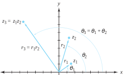
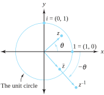
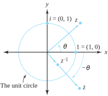
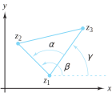
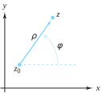

Section1.4The Geometry of Complex Numbers, Part II
In Section 1.3 we saw that a complex number \(z=x+iy\) could be viewed as a vector in the \(xy\) plane with its tail at the origin and its head at the point \((x, y)\text{.}\) A vector can be uniquely specified by giving its magnitude (\ie, its length) and direction (\ie, the angle it makes with the positive \(x\) axis). In this section, we focus on these two geometric aspects of complex numbers.
Let \(r\) be the modulus of \(z\) (\ie, \(r=|z|\)) and let \(\theta\) be the angle that the line from the origin to the complex number \(z\) makes with the positive \(x\) axis. (Note: The number \(\theta\) is undefined if \(z=0)\text{.}\) Then, as Figure 1.4.1(a) shows,
Figure1.4.1.Polar representation of complex numbers
Definition1.4.2.Polar Representation.
Identity (1.4.1) is known as a polar representation of \(z\text{,}\) and the values \(r\) and \(\theta\) are called polar coordinates of \(z\text{.}\)
Example1.4.3.
If \(z=1+i\text{,}\) then \(r=\sqrt{2}\) and \(z=(\sqrt{2}\cos\frac{\pi}{4}, \sqrt{2}\sin\frac{\pi}{4})=\sqrt{2}(\cos\frac{\pi}{4}+i\sin\frac{\pi}{4})\) is a polar representation of \(z\text{.}\) The polar coordinates in this case are \(r= \sqrt{2}\text{,}\) and \(\theta=\frac{\pi}{4}\text{.}\)
As Figure 1.4.1(b) shows, \(\theta\) can be any value for which the identities \(\cos \theta =\frac{x}{r}\) and \(\sin \theta =\frac{y}{r}\) hold. For \(z \ne 0\text{,}\) the collection of all values of \(\theta\) for which \(z=r(\cos \theta +i\sin \theta )\) is denoted \(\arg z\text{.}\) Formally, we have the following definitions.
If \(\theta \in \arg \,z\text{,}\) we say that \(\theta\) is an argument of \(z\text{.}\)
Note that we write \(\theta \in \arg \,z\) as opposed to \(\theta =\arg z\text{.}\) We do so because \(\arg z\) is a set, and the designation \(\theta \in \arg z\) indicates that \(\theta\) belongs to that set. Note also that, if \(\theta_1 \in \arg \, z\) and \(\theta_2 \in \arg z\text{,}\) then there exists some integer \(n\) such that
Because \(1+i=\sqrt{2}(\cos \frac{\pi}{4}+i\sin \frac{\pi}{4})\text{,}\) we have
\begin{equation*}
\arg (1+i) = \left\{\frac{\pi}{4}+2n\pi : n \text{ is an integer } \right\} = \left\{\cdots, -\frac{7\pi}{4}, \frac{\pi}{4}, \frac{9\pi}{4}, \frac{17\pi}{4},\cdots \right\}
\end{equation*}
Mathematicians have agreed to single out a special choice of \(\theta \in \arg z\text{.}\) It is that value of \(\theta\) for which \(-\pi \lt \theta \le \pi\text{,}\) as the following definition indicates.
If \(\theta =\mathrm{Arg}\,z\text{,}\) we call \(\theta\) the argument of \(z\text{.}\)
Example1.4.7.
\(Arg(1+i) =\frac{\pi}{4}\text{.}\)
Remark1.4.8.
Clearly, if \(z=x+iy=r(\cos \theta +i\sin \theta )\text{,}\) where \(x \ne 0\text{,}\) then
\begin{equation*}
\arg \, z \subset \arctan \frac{y}{x}\text{,}
\end{equation*}
where \(\arctan \frac{y}{x} = \{\theta : \tan \theta = \frac{y}{x}\}\text{.}\) Note that, for any real number \(t, \, \arctan t\) is a set (as opposed to \(\mathrm{Arctan} \, t\text{,}\) which is a number). We specifically identify \(\arg z\) as a proper subset of \(\arctan \frac{y}{x}\) because \(\tan \theta\) has period \(\pi\text{,}\) whereas \(\cos \theta\) and \(\sin \theta\) have period \(2\pi\text{.}\) In selecting the proper values for \(\arg z\text{,}\) we must be careful in specifying the choices of \(\arctan \frac{y}{x}\) so that the point \(z\) associated with \(r\) and \(\theta\) lies in the appropriate quadrant.
Example1.4.9.
If \(z=-\sqrt{3}-i = r(\cos \theta +i\sin \theta)\text{,}\) then \(r=|z| = |-\sqrt{3} -i| =2\) and \(\theta \in \arctan \frac{y}{x}=\arctan \frac{-1}{-\sqrt{3}} = \{\frac{\pi}{6}+n\pi : n\text{ is an integer } \}\text{.}\) It would be a mistake to use \(\frac{\pi}{6}\) as an acceptable value for \(\theta\text{,}\) as the point \(z\) associated with \(r=2\) and \(\theta =\frac{\pi}{6}\) is in the first quadrant, whereas \(-\sqrt{3}-i\) is in the third quadrant. A correct choice for \(\theta\) is \(\theta =\frac{\pi}{6}-\pi = -\frac{5\pi}{6}\) because
\begin{align*}
\mathrm{Arg}(-\sqrt{3}-i) \amp = -\frac{5\pi}{6}\text{ , and }\\
\mathrm{arg}(-\sqrt{3}-i) \amp = \left\{-\frac{5\pi}{6}+2n\pi :n \text{ is an integer } \right\}\text{,}
\end{align*}
which illustrates that \(\arg (-\sqrt{3}-i)\) is indeed a proper subset of \(\arctan \frac{-1}{-\sqrt{3}}\text{.}\)
Example1.4.10.
If \(z=x+iy=0+4i\text{,}\) it would be a mistake to attempt to find \(\mathrm{Arg}\,z\) by looking at \(\arctan \frac{y}{x}\text{,}\) as \(x=0\text{,}\) so \(\frac{y}{x}\) is undefined. If \(z \ne 0\) is on the \(y\) axis, then
\begin{align*}
\mathrm{Arg}\,z \amp = \frac{\pi}{2}, \text{ if } \mathrm{Im}\,{z}>0 \text{ and }\\
\mathrm{Arg}\,z \amp = -\frac{\pi}{2}, \text{ if } \mathrm{Im}\,z \lt 0\text{.}
\end{align*}
In this case, \(\mathrm{Arg}(4i)=\frac{\pi}{2}\) and \(\arg(4i)=\{\frac{\pi}{2} +2n\pi:n \text{ is an integer } \}\text{.}\)
As you will see in Chapter 2, \(\mathrm{Arg}\,z\) is a discontinuous function of \(z\) because it “jumps” by an amount of \(2\pi\) as \(z\) crosses the negative real axis.
In Chapter 5 we define \(e^z\) for any complex number \(z\text{.}\) You will see that this complex exponential has all the properties of real exponentials that you studied in earlier mathematics courses. That is, \(e^{z_1}e^{z_2}=e^{z_1+z_2}\text{,}\) and so on. You will also see, amazingly, that if \(z=x+iy\text{,}\) then
We will establish this result rigorously in Chapter 5, but there is a plausible explanation we can give now. If \(e^{z}\) has the normal properties of an exponential, it must be that \(e^{x+iy}=e^xe^{iy}\text{.}\) Now, recall from Calculus the values of three infinite series:
At this point our argument loses rigor because we have not talked about infinite series of complex numbers, let alone whether such series converge. Nevertheless, if we merely take the last series as a formal expression and split it into two series according to whether the index \(k\) is even (\(k=2n\)) or odd (\(k=2n+1\)), we get
Thus, it seems the only possible value for \(e^{z}\) is that given by Equation (1.4.5). We will use this result freely from now on, and, as stated, supply a rigorous proof in Chapter 5.
If we set \(x=0\) and let \(\theta\) take the role of \(y\) in Equation (1.4.5), we get a famous result known as Euler’s formula:
If \(\theta\) is a real number, \(e^{i\theta}\) will be located somewhere on the circle with radius 1 centered at the origin. This assertion is easy to verify because
Euler was the first to discover this relationship; it is referred to as Euler’s identity. It has been labeled by many mathematicians as the most amazing relation in analysis—and with good reason. Symbols with a rich history are miraculously woven together—the constant \(\pi\) used by Hippocrates as early as 400 b.c.; \(e\text{,}\) the base of the natural logarithms; the basic concepts of addition (\(+\)) and equality (\(=\)); the foundational whole numbers 0 and 1; and \(i\text{,}\) the number that is the central focus of this book.
Euler’s Formula (1.4.6) is of tremendous use in establishing important algebraic and geometric properties of complex numbers. You will see shortly that it enables you to multiply complex numbers with great ease. It also allows you to express a polar form of the complex number \(z\) in a more compact way. Recall that, if \(r=\left| z\right|\) and \(\theta\in\)\(\arg\)\(z\text{,}\) then \(z=r(\cos\theta+i\sin\theta)\text{.}\) Using Euler’s Formula we can now write \(z\) in its exponential form:
With reference to Example 1.4.9, with \(z=-\sqrt{3}-i\text{,}\) we have \(z=2e^{i(-5\pi/6)}\text{.}\)
Together with the rules for exponentiation that we will verify in Chapter 5, Equation (1.4.9) has interesting applications. If \(z_1 = r_1e^{i\theta_1}\) and \(z_2 = r_2e^{i\theta_2}\text{,}\) then
Figure 1.4.13 illustrates the geometric significance of this equation.

Figure1.4.13.The product of two complex numbers \(z_3=z_1z_2\)
We have already shown that the modulus of the product is the product of the moduli; that is, \(|z_1z_2| = |z_1| |z_2|\text{.}\) Identity (1.4.10) establishes that an argument of \(z_1z_2\) is an argument of \(z_1\) plus an argument of \(z_2\text{.}\) It also answers the question posed at the end of Section 1.3 regarding why the product \(z_1z_2\) was in a different quadrant than either \(z_1\) or \(z_2\text{.}\) It further offers an interesting explanation as to why the product of two negative real numbers is a positive real number. The negative numbers, each of which has an angular displacement of \(\pi\) radians, combine to produce a product that is rotated to a point with an argument of \(\pi+\pi=2\pi\) radians, coinciding with the positive real axis.
Using exponential form, if \(z \ne 0\text{,}\) we can write \(\arg z\) a bit more compactly as
Before proceeding with the proof of this theorem, we recall two important facts about sets. First, to establish the equality of two sets, we must show that each is a subset of the other. Second, the sum of two sets is the sum of all combinations of elements from the first and second sets, respectively. In this case, \(\arg z_1 + \arg z_2 = \{\theta_1+\theta_2:\theta_1 \in \arg z_1 \text{ and } \theta_2 \in \arg z_2\}\text{.}\)
Proof.
Let \(\theta \in \arg (z_1z_2)\text{.}\) Because \(z_1z_2=r_1r_2e^{i(\theta_1+\theta_2)}\text{,}\) it follows from Formula (1.4.11) that \(\theta_1 + \theta_2\in \arg (z_1z_2)\text{.}\) By Equation (1.4.3) there is some integer \(n\) such that \(\theta = \theta_1+\theta_2+2n\pi\text{.}\) Further, as \(z_1=r_1e^{i\theta_1}, \, \theta_1 \in \arg z_1\text{.}\) Likewise, \(z_2 = r_2e^{i\theta_2}\) gives \(\theta_2 \in \arg z_2\text{.}\) But if \(\theta_2 \in \arg z_2\text{,}\) then \(\theta_2 +2n\pi \in \arg z_2\text{.}\) This result shows that \(\theta =\theta_1+(\theta _2+2n\pi) \in \arg z_1 + \arg z_2\text{.}\) Thus, \(\arg (z_1z_2) \subseteq \arg z_1 + \arg \,z_2\text{.}\) The proof that \(\arg z_1 + \arg z_2 \subseteq \arg (z_1z_2)\) is left as an exercise.
Using Equality (1.4.9) gives \(z^{-1}=\frac{1}{z}=\frac{1}{re^{i\theta}}=\frac{1}{r}e^{-i\theta}\text{.}\) In other words,
If \(z\) is in the first quadrant, the positions of the numbers \(z\text{,}\)\(\overline{z}\text{,}\) and \(z^{-1}\) are as shown in Figure 1.4.15 when \(|z|\lt 1\text{.}\)Figure 1.4.16 depicts the situation when \(|z|>1\text{.}\)

Figure1.4.15.Relative positions of \(z, \ \overline{z}\text{,}\) and \(z^{-1}\text{,}\) when \(|z| \lt 1\)

Figure1.4.16.Relative positions of \(z, \ \overline{z}\text{,}\) and \(z^{-1}\text{,}\) when \(|z| > 1\)
Example1.4.17.
If \(z=1+i\text{,}\) then \(r=|z| =\sqrt{2}\) and \(\theta =\mathrm{Arg}\,z = \frac{\pi}{4}\text{.}\) Therefore \(z^{-1}=\frac{1}{\sqrt{2}} [\cos(-\frac{\pi}{4}) + i\sin(-\frac{\pi}{4})] = \frac{1}{\sqrt{2}}\left[ \frac{\sqrt{2}}{2} - i\frac{\sqrt{2}}{2}\right]\) and has modulus \(\frac{1}{\sqrt{2}}=\frac{\sqrt{2}}{2}\text{.}\)
Example1.4.18.
If \(z_1=8i\) and \(z_2=1+i\sqrt{3}\text{,}\) then representative polar forms for these numbers are \(z_1=8(\cos\frac{\pi}{2}+i\sin\frac{\pi}{2})\) and \(z_2=2(\cos\frac{\pi}{3}+i\sin\frac{\pi}{3})\text{.}\) Hence
\(5(\cos \theta +i\sin \theta) = 5e^{i\theta}\text{,}\) where \(\theta = \mathrm{Arctan}(\frac{4}{3})\text{.}\)
(h)
\((5+5i)^3\text{.}\)
4.
Show that \(\arg z_1 + \arg z_2 \subseteq \arg z_1z_2\text{,}\) thus completing the proof of Theorem 1.4.14.
5.
Express the following in \(a+ib\) form.
(a)
\(e^{i\frac{\pi}{2}}\text{.}\)
Solution.
\(i\text{.}\)
(b)
\(4e^{-i\frac{\pi}{2}}\text{.}\)
(c)
\(8e^{i\frac{7\pi}{3}}\text{.}\)
Solution.
\(4+i4\sqrt{3}\text{.}\)
(d)
\(-2e^{i\frac{5\pi}{6}}\text{.}\)
(e)
\(2ie^{-i\frac{3\pi}{4}}\text{.}\)
Solution.
\(\sqrt{2}-i\sqrt{2}\text{.}\)
(f)
\(6e^{i\frac{2\pi}{3}}e^{i\pi}\text{.}\)
(g)
\(e^2e^{i\pi}\text{.}\)
Solution.
\(-e^2\text{.}\)
(h)
\(e^{i\frac{\pi}{4}}e^{-i\pi}\text{.}\)
6.
Show that \(\arg z_1 = \arg z_2\) iff \(z_2 = cz_1\text{,}\) where \(c\) is a positive real constant.
7.
Let \(z_1 = -1+i\sqrt{3}\) and \(z_2 = -\sqrt{3}+i\text{.}\) Show that the equation \(\mathrm{Arg}(z_1z_2) = \mathrm{Arg} \, z_1 + \mathrm{Arg} \, z_2\)does not hold for the specific choice of \(z_1\) and \(z_2\text{.}\) Why not?
Show that the equation \(\mathrm{Arg}(z_1z_2) = \mathrm{Arg} \, z_1\ + \mathrm{Arg} \, z_2\) is true provided that the inequalities \(-\frac{\pi}{2} \lt \mathrm{Arg} \, z_1 \le \frac{\pi}{2}\) and \(-\frac{\pi}{2} \lt \mathrm{Arg} \, z_2 \le \frac{\pi}{2}\) are satisfied. Describe the set of points that meets this criterion.
9.
Describe the set of complex numbers for which \(\mathrm{Arg}(\frac{1}{z}) \ne - \mathrm{Arg}(z)\text{.}\) Prove your assertion.
Solution.
All \(z\) except \(z=0\) and the negative real numbers. Prove this assertion!
10.
Establish the identity \(\arg(\frac{z_1}{z_2}) = \arg z_1 - \arg z_2\text{.}\)
11.
Show that \(\arg(\frac{1}{z}) = -\arg z\text{.}\)
Solution.
Let \(\theta \in \arg(\frac{1}{z})\text{.}\) Then \(\frac{1}{z}=re^{i\theta}\text{.}\) Hence, \(z=\frac{1}{r}e^{-i\theta}\text{,}\) so \(-\theta \in \arg(z)\text{,}\) or \(\theta \in -\arg(z)\text{.}\) Thus, \(\arg(\frac{1}{z}) \subseteq -\arg(z)\text{.}\) The proof that \(-\arg(z) \subseteq \arg(\frac{1}{z})\) is similar.
12.
Show that \(\arg(z_1\overline{z_2})= \arg z_1 - \arg z_2\text{.}\)
13.
Show that, if \(z \ne 0\text{,}\) then
(a)
\(\mathrm{Arg}(z\overline{z})=0\text{.}\)
Solution.
Let \(0 \ne z=x+iy\text{.}\) Since \(z\bar{z}=x^2+y^2>0, \; \mathrm{Arg}(z\bar{z})=0\text{.}\)
(b)
\(\mathrm{Arg}(z+\overline{z})=0\) when \(\mathrm{Re}(z)>0\text{.}\) \label {1.4.13b}
14.
Let \(z_1, \, z_2\text{,}\) and \(z_3\) form the vertices of a triangle as indicated in Figure 1.4.19. Show that \(\alpha \in \arg(\frac{z_2-z_1}{z_3-z_1}) = \arg(z_2-z_1) - \arg(z_3-z_1)\) is the angle at the vertex \(z_1\text{.}\)

Figure1.4.19.For Exercise 14
15.
Let \(z \ne z_0\text{.}\) Show that the polar representation \(z-z_0=\rho(\cos \phi +i\)\(\sin \phi )\) can be used to denote the displacement vector from \(z_0\) to \(z\text{,}\) as indicated in Figure 1.4.20

Figure1.4.20.For Exercise 15
Solution.
From the figure it is clear that \(\mathrm{Arg}(z-z_0)=\phi\text{,}\) and \(|z-z_0|=\rho\text{.}\) The exponential form for \(z-z_0\) then gives the desired conclusion.
16.
Show that \(\mathrm{Arg}\,\overline{(z-w)} = -\mathrm{Arg} \,(z-w)\) iff \(z-w\) is not a negative real number.